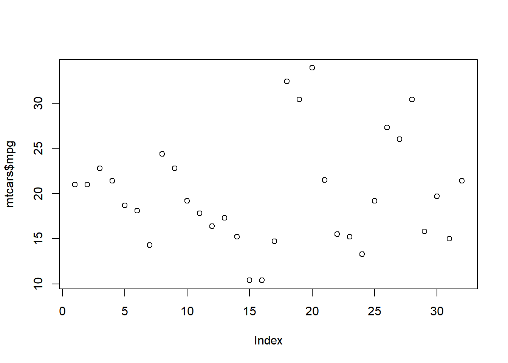

plot(mtcars$mpg)
Cranberry-Lemon University
Mount-Sheikh University
Enter the text of your abstract here.
Here goes an introduction text
You can use directly LaTeX command or Markdown text.
LaTeX command can be used to reference other section. See Section \(\ref{sec:headings}\). However, you can also use bookdown extensions mechanism for this.
You can use equation in blocks
\[ \xi _{ij}(t)=P(x_{t}=i,x_{t+1}=j|y,v,w;\theta)= {\frac {\alpha _{i}(t)a^{w_t}_{ij}\beta _{j}(t+1)b^{v_{t+1}}_{j}(y_{t+1})}{\sum _{i=1}^{N} \sum _{j=1}^{N} \alpha _{i}(t)a^{w_t}_{ij}\beta _{j}(t+1)b^{v_{t+1}}_{j}(y_{t+1})}} \]
But also inline i.e \(z=x+y\)
Another paragraph.
You can insert references. Here is some text (Kour and Saabne 2014b, 2014a) and see Hadash et al. (2018).
The documentation for may be found at
You can use custom blocks with LaTeX support from rmarkdown to create environment.
Of note is the command , which produces citations appropriate for use in inline text.
You can insert LaTeX environment directly too.
produces
You can insert figure using LaTeX directly.
See Figure \(\ref{fig:fig1}\). Here is how you add footnotes. [^Sample of the first footnote.]
But you can also do that using R.
You can use bookdown to allow references for Tables and Figures.
Below we can see how to use tables.
See awesome Table~\(\ref{tab:table}\) which is written directly in LaTeX in source Rmd file.
You can also use R code for that.
| mpg | cyl | disp | hp | drat | wt | qsec | vs | am | gear | carb | |
|---|---|---|---|---|---|---|---|---|---|---|---|
| Mazda RX4 | 21.0 | 6 | 160 | 110 | 3.90 | 2.620 | 16.46 | 0 | 1 | 4 | 4 |
| Mazda RX4 Wag | 21.0 | 6 | 160 | 110 | 3.90 | 2.875 | 17.02 | 0 | 1 | 4 | 4 |
| Datsun 710 | 22.8 | 4 | 108 | 93 | 3.85 | 2.320 | 18.61 | 1 | 1 | 4 | 1 |
| Hornet 4 Drive | 21.4 | 6 | 258 | 110 | 3.08 | 3.215 | 19.44 | 1 | 0 | 3 | 1 |
| Hornet Sportabout | 18.7 | 8 | 360 | 175 | 3.15 | 3.440 | 17.02 | 0 | 0 | 3 | 2 |
| Valiant | 18.1 | 6 | 225 | 105 | 2.76 | 3.460 | 20.22 | 1 | 0 | 3 | 1 |